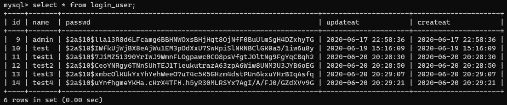
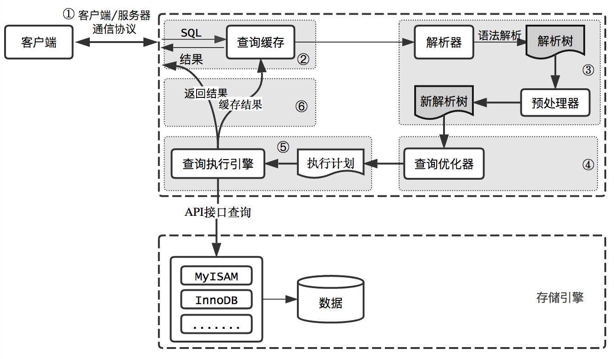
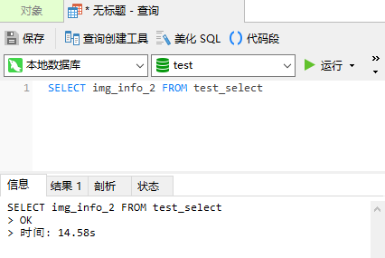
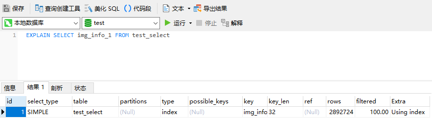

分享人：张粤艺
1.背景介绍
2.知识剖析
3.常见问题
4.解决方案
5.编码实战
6.扩展思考
7.参考文献
8.更多讨论
SQL -- 应用最为广泛运用的数据库语言。
是一种特定目的编程语言，用于管理关系数据库管理系统。
数据插入、查询、更新和删除，数据库模式创建和修改，以及数据访问控制。
大部分的SQL代码在不同的数据库系统中并不具有完全的跨平台性。
select * from table_name;
查询出表中所有的的字段数据（以 MySQL 为例）。
MySQL 执行查询的流程图
MySQL 执行基本步骤
1.客户端发送一条查询给服务器。
2.服务器先检查查询缓存，如果命中了缓存，则立刻返回存储在缓存中的结果。否则进入下一阶段。
3.服务器端进行SQL解析，预处理，再由优化器生成对应的执行计划
4.MySql根据优化器生成的执行计划，调用存储引擎的API执行查询。
5.返回结果给客户端。
MySQL 客户端/服务端通信
任一时刻，要么是服务器向客户端发送数据，要么是客户端向服务器发送数据，这两个动作不能同时发生。
一旦一端开始发送消息，另一端要接收完整个消息才能响应它，所以我们无法也无须将一个消息切成小块独立发送，也没有办法进行流量控制。
select * from table_name;
1、会取出表中的所有字段，解析更多的 对象、字段、权限、属性···不论该字段的数据对调用的应用程序是否有用。
2、如果表的结构在以后发生了改变，那么可能会取到不正确的数据甚至是出错。
3、妨碍优化器选择更优的执行计划，不利于查询的性能优化。(索引覆盖：索引覆盖是一种速度极快，效率极高的查询方式。选中的数据列只用从索引中就能够获得。)
我们该如何接受数据？
1. 不使用通配符，SQL 中只选取必须的字段。
2. 映射文件中添加 resultmap，注明映射关系。
索引覆盖
无索引
SQL 中其他的通配符用法
select count(*) from table_name;
Explain 语句分析 SQL 语句执行效率
http://bbs.csdn.net/topics/390302591?page=1#post-393091122
http://blog.csdn.net/li563868273/article/details/51254907
感谢刘家铭、杨腾东师兄，本次小课堂是在他们之前技术分享的基础上完善而成
BY : 张粤艺